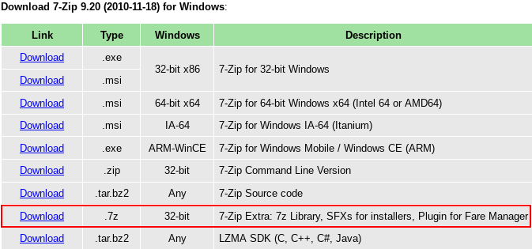
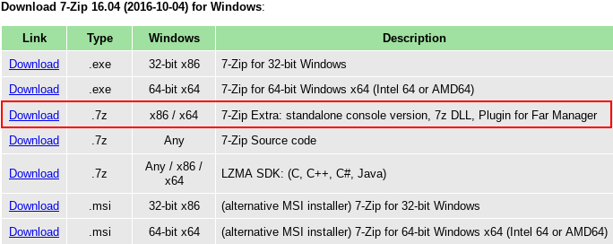

We believe security software like Whonix needs to remain Open Source and independent. Would you help sustain and grow the project? Learn more about our 14 year success story and maybe DONATE!
OLD Whonix Windows Installer

The Whonix Windows Installer for Windows is a simple and fast way to set-up Whonix on a system running Microsoft Windows. Screenshots. Rationale. Build documentation. Source code. whonix-installer.exe
 This page is archived.
This page is archived.
Introduction
The Whonix Windows Installer for Windows is a simple and fast way to set-up Whonix on a system running Microsoft Windows.
The
Whonix Windows Installer was developed with a focus on providing users
with an fast and easy method to install Whonix in Microsoft Windows.
This gives users the opportunity to experiment with Whonix in a familiar
environment without the necessity of complex virtual machine imports or
host operating system changes. When the
whonix-installer.exe is executed, the latest VirtualBox
version and both Whonix VMs are seamlessly installed on the Windows
machine. From there, users can immediately start using Whonix with no
further configuration required. [1]
Screenshots
Figure: Run Whonix Installer

Figure: Install Whonix
Figure: License Agreement

Figure: Extracting Files

Figure: Complete Whonix Installation

Building from source
Preparation
Download a copy of this repository. Use its folder to collect required files for building.
https://github.com/Whonix/Whonix-Windows-Installer
Download the Whonix VirtualBox LXQt image to the folder and renamed it to "whonix.ova"
https://www.whonix.org/wiki/VirtualBox
Download and install Inno Setup
https://jrsoftware.org/isdl.php
Whonix-UI executable in the folder
Built from source: https://www.whonix.org/wiki/Dev/Windows_Starter
Download the newest "Windows hosts" VirtualBox installer to any location.
https://www.virtualbox.org/wiki/Downloads
Navigate in the commandline to that location and run
VirtualBox[Characters
based on your version].exe -extract A window will open telling
you where its files have been extracted. Navigate to this folder, rename
VirtualBox[Characters based on your version]amd64.msi
to virtualbox_x64.msi and move it to the repository/build
folder.
Building
Your build folder should have at least:
license.txtlogo.icovirtualbox_x64.msiWhonix.exeWhonix.isswhonix.ova
Optional: Open Whonix.iss and change
AppVersion. Set Compression as desired
(https://documentation.help/Inno-Setup/topic_setup_compression.htm)
Right-click Whonix.iss and select Compile
(Or inside Inno Setup select Build → Compile).
The executable is in Output.
Note: If the .ova becomes greater than 2GB,
Whonix.iss must be set to use
DiskSpanning=Yes. This will output an .exe and
.bin file. To combine, add 7za.exe and
7zSD.sfx to the 7zip folder. Open
7zip/make self extract.bat, which combines everything in
Output into a .7z archive and then into a
self-extracting-and-running .exe.
Obtaining 7zSD.sfx and 7za.exe
https://www.7-zip.org/download.html
7zSD.sfx Download the 7-zip compressed archive file and
extract it.

7za.exe Download the .7z compressed archive
file under 7-Zip 16.04 Extra and extract it.

Forum Discussion
https://forums.whonix.org/t/testing-whonix-installer-for-windows/2987/210
Deprecated Installer
There used to be a version of this installer based on NSIS which has been discontinued, due to stability and a host of other issues. It can still be found here: https://github.com/adrelanos/Whonix-Windows-Installer-deprecated
See Also
Footnotes
- ↑ While no further action is required to install or configure the Whonix VMs, it is possible (in some cases) that host bios settings or workarounds for VirtualBox bugs will require user intervention. These are not Whonix issues.
Categories: Development